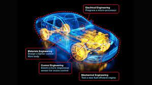

| Agriculture 7 Food Technology |
Material Technology |
Engineering Systems |
Digital Technology |

|
|

|

|
| *Food properties, processing, and preparation, as well as interdependence in producing high-quality food. |
*How to analyse solutions against established objectives and evaluate the efficiency and adaptability of selections made throughout the creation and manufacturing of the solution. |
*Identifies, analyses, applies, and maintains the hazard and WHS issues associated with various tools, equipment, materials, processes, and technologies. |
*Data collection, management, and analysis, which includes the essence and characteristics of data, how they are accumulated and analysed using a variety of digital systems and passive components, and data interpretation when creating information. |
| *Skills in researching, analysing and interacting in food related issues. |
*Products and solutions for individuals and/or communities that take ethical and environmental factors into account. |
*Apply design principles to prototype modification, advancement, and manufacturing. |
*Defining difficulties and formulating digital solutions, which progresses to identifying a problem and constructing, trying to implement, and analysing student-created solutions, as well as assessing how well current information systems meet various needs. |
| *Expertise in designing, manufacturing, and examining products for specific food applications. |
*Contemporary trends and product offerings created by Aboriginal and/or Torres Strait Islander developers who are impacted by their cultural heritage. |
*Identifies, chooses, and employs a variety of hand and machine tools, equipment, and processes in order to develop high-quality functional projects. |
*Communicating concepts and information, which progresses to maintaining, constructing, and sharing information concepts and information, as well as maintaining infrastructure improvements individually and collaborative manner to creating digital solutions. |
| *Knowledge and comprehension of the importance of food in society. |
*The consultant's role in materials technology and its effects on the environment and society. |
*Selects, validates, and employs a range of appropriate and related materials for various uses. |
*Experimenting with alternative techniques for guiding game software with a mouse, touch pad, touch screen, keyboard, stylus, or switch monitoring device, and using specific applications to modify text, figures, audio, and photographs are examples of investigating and recognising hardware and software components of digital systems when forming concepts and information. |
| *Agricultural production is subject to legal and ethical constraints. |
*How to assess design concepts, operations, and solutions in light of capabilities, aesthetic appeal, and a variety of restrictions. |
*Selects, analyses, and employs a variety of appropriate communication techniques in the creation, making preparations, manufacturing, and demonstration of concepts and projects. |
*Acknowledging and explaining the importance of cyber-safety when using web based information systems, such as acknowledging that shared personal information can be used for illegal purposes and that using a password is a method of safeguarding identity. |
| *Growth and development circumstances for agricultural plants and animals. |
*Characterisation and features of various materials and items. |
*In the classroom environment, identifies and participates in cooperative learning practices. |
*Algorithm is proposed, forms of algorithms, and ways to comprise data types in English and flowchart methods. |
| *How to create and prepare nutritious dishes for a social group. |
*Imaginative solutions of technological innovations to improve the utilisation of time and/or substances in the manufacturing of designs or items. |
*Employs and transmits abilities, procedures, and equipment in a diverse range of settings and projects. |
*Real world issues, as well as their functional demands and limitations. |
| *Food and fibre manufacturing in Australia and its significance to the country's food security and economy, along with imports and exports to Asia. |
*How to analyse options against defined requirements and review the performance and appropriateness of decisions made all through the way to solve design and production. |
*Materials are evaluated based on their functional, industrial, aesthetic, and environmental qualities, as well as their construction quality. |
| *Assisting the students in determining the efficacy and suitability of choices being made during project development and production. |
*Using proper technological conditions and techniques, how to start generating and interact the evolution of new designs, plans, and procedures for various publics. |
*Identifies, evaluates, and utilises a variety of contemporary, innovative, and evolving technologies and their applications. |